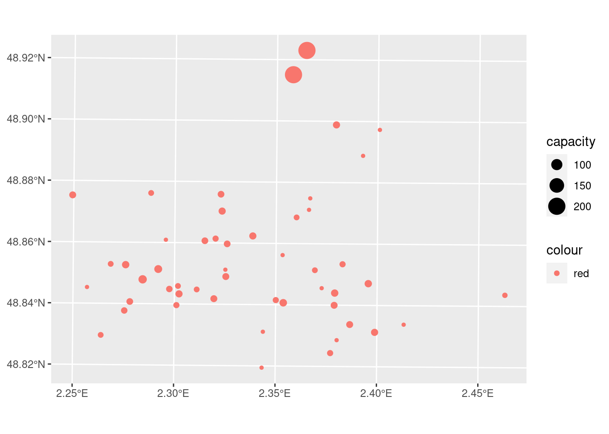
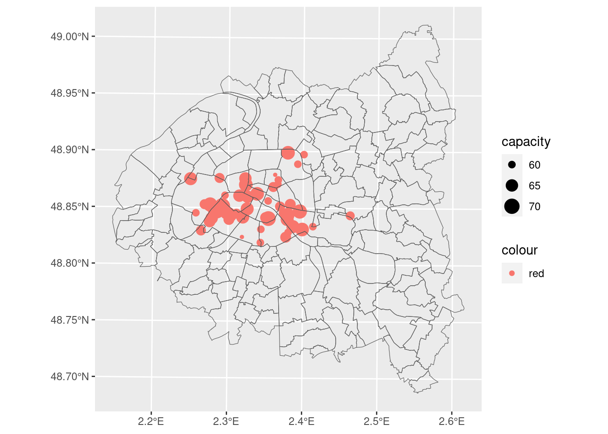
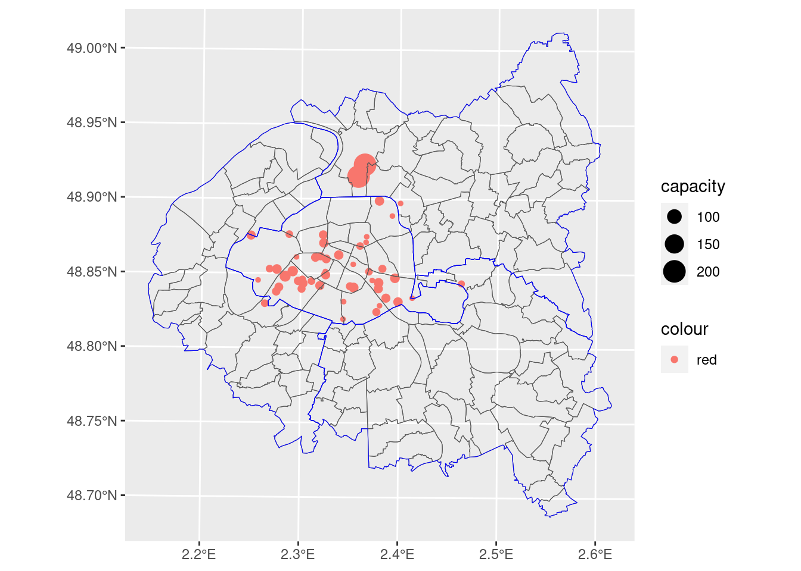
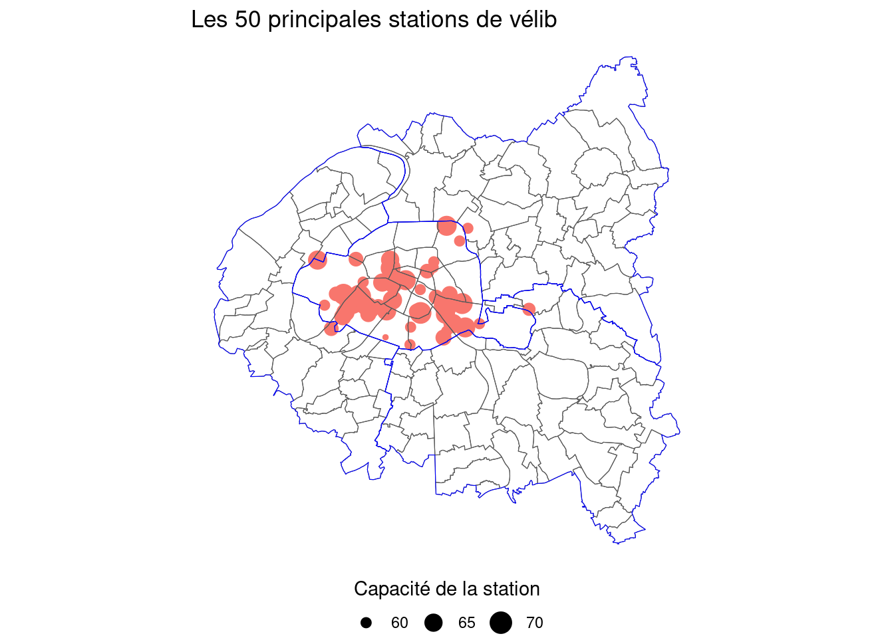
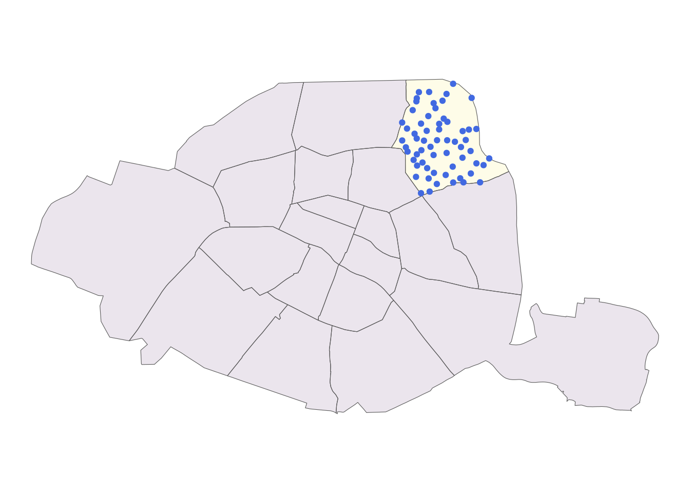
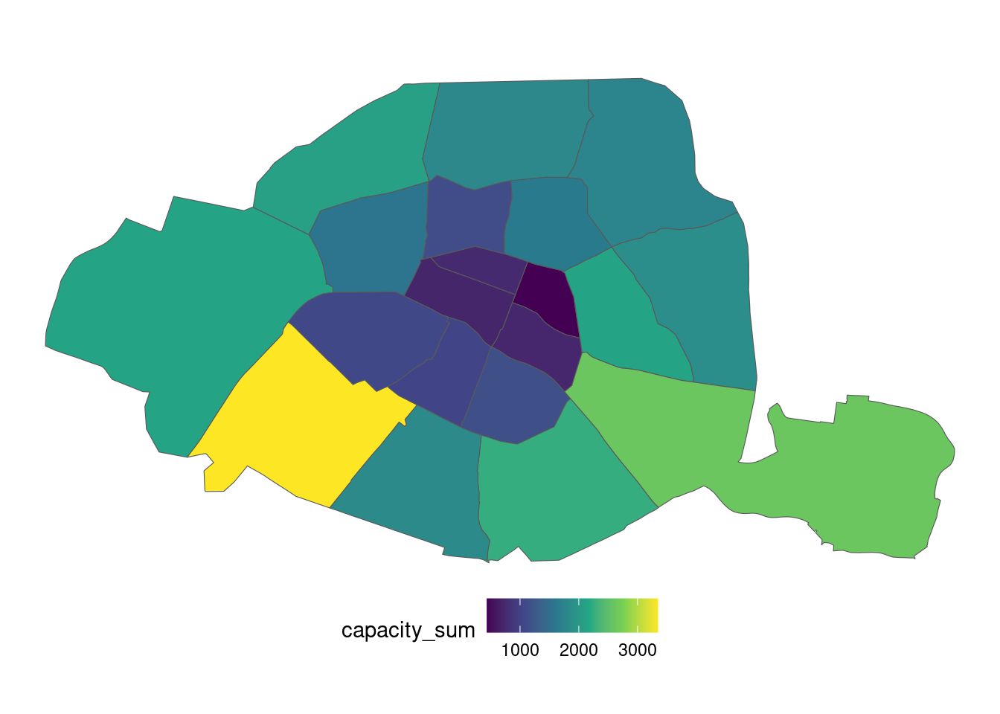
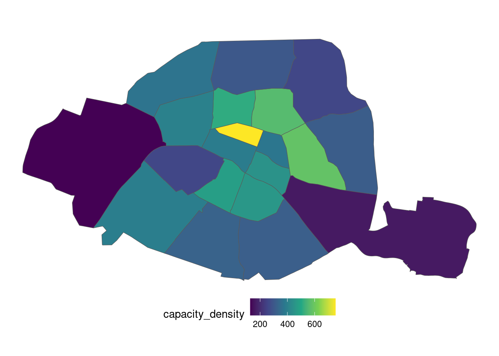
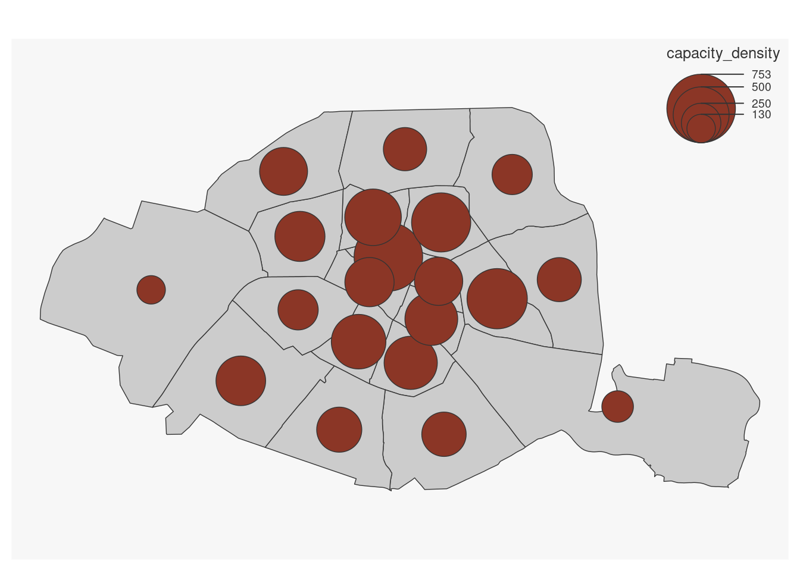

remotes::install_github("linogaliana/cartiflette-r")
install.packages("leaflet")Manipuler des données spatiales avec sf
Dérouler les slides ci-dessous ou cliquer ici pour afficher les slides en plein écran.
Dans ce TP, nous allons apprendre à importer et manipuler des données spatiales avec .
Ce logiciel propose des fonctionnalités très intéressantes pour ce type de données complexes qui le rendent capable de se comporter comme un SIG. Grâce à la librairie sf, une extension de dplyr aux données spatiales, les données géographiques pourront être manipulées comme n’importe quel type de données avec . La complexité induite par la dimension spatiale ne sera pas ressentie.
sf, une association de tables de données classiques à des géométries

Si vous êtes intéressés par Python , une version très proche de ce TP est disponible dans mon cours de l’ENSAE.
Dans ce chapitre, nous allons utiliser les packages suivants:
library(units)
library(dplyr)
library(sf)
library(ggplot2)
library(mapsf)
library(leaflet)
library(cartiflette)Ce chapitre illustre à partir d’exemples pratiques certains principes centraux de l’analyse de données:
- Manipulations sur les attributs des jeux de données ;
- Manipulations géométriques ;
- Gestion des projections cartographiques ;
- Création rapide de cartes (ce sera approfondi dans un prochain chapitre).
Note sur les annotations
Certains exemples de code présentent des annotations sur le côté, passez votre souris dessus pour les afficher, comme ci-dessous
"une annotation explicative m'accompagne à droite"- 1
- Je m’affiche quand on passe la souris sur moi 🐭 !
1 Découverte des objets géographiques
Dans cette partie, nous utiliserons les fonds de carte de l’IGN dont la mise à disposition est facilitée par le projet cartiflette1.
Exercice 1: découverte des objets géographiques
En premier lieu, on récupère des données géographiques grâce au package cartiflette.
- Utiliser le code ci-dessous pour télécharger les données communales (produit
Admin Expressde l’IGN) des départements de la petite couronne (75, 92, 93 et 94) de manière simplifiée grâce au packagecartiflette:
# 1. Chargement des données de cartiflette
communes_borders <- download_vectorfile_url_all(
crs = 4326,
values = c("75", "92", "93", "94"),
borders="COMMUNE",
vectorfile_format="geojson",
filter_by="DEPARTEMENT",
source="EXPRESS-COG-CARTO-TERRITOIRE",
year=2022)- Regarder les premières lignes des données. Identifier la différence avec un dataframe standard.
Solution question 2
# 2) Regarder les premières lignes
head(communes_borders)Premières lignes des données
Simple feature collection with 6 features and 12 fields
Geometry type: POLYGON
Dimension: XY
Bounding box: xmin: 2.169349 ymin: 48.80894 xmax: 2.469851 ymax: 48.92685
Geodetic CRS: WGS 84
ID NOM NOM_M INSEE_COM
1 COMMUNE_0000000009736048 Paris PARIS 75056
2 COMMUNE_0000000009736037 Levallois-Perret LEVALLOIS-PERRET 92044
3 COMMUNE_0000000009736055 Bois-Colombes BOIS-COLOMBES 92009
4 COMMUNE_0000000009736538 Malakoff MALAKOFF 92046
5 COMMUNE_0000000009736038 Clichy CLICHY 92024
6 COMMUNE_0000000009736052 Nanterre NANTERRE 92050
STATUT POPULATION INSEE_CAN INSEE_ARR INSEE_DEP INSEE_REG
1 Capitale d'état 2165423 NR 1 75 11
2 Commune simple 66082 16 2 92 11
3 Commune simple 28841 11 2 92 11
4 Commune simple 30950 18 1 92 11
5 Commune simple 63089 09 2 92 11
6 Préfecture 96277 99 2 92 11
SIREN_EPCI source
1 200054781 IGN:EXPRESS-COG-CARTO-TERRITOIRE
2 200054781/200057982 IGN:EXPRESS-COG-CARTO-TERRITOIRE
3 200054781/200057990 IGN:EXPRESS-COG-CARTO-TERRITOIRE
4 200054781/200057966 IGN:EXPRESS-COG-CARTO-TERRITOIRE
5 200054781/200057990 IGN:EXPRESS-COG-CARTO-TERRITOIRE
6 200054781/200057982 IGN:EXPRESS-COG-CARTO-TERRITOIRE
geometry
1 POLYGON ((2.364204 48.8164,...
2 POLYGON ((2.287395 48.90364...
3 POLYGON ((2.266394 48.90629...
4 POLYGON ((2.278183 48.81425...
5 POLYGON ((2.303774 48.89415...
6 POLYGON ((2.229099 48.90603...- Afficher le
crsdecommunes_borders. Ce dernier contrôle la transformation de l’espace tridimensionnel terrestre en une surface plane. Utiliserst_transformpour transformer les données en Lambert 93, le système officiel (code EPSG 2154).
Solution question 3
# 3) Afficher le crs
sf::st_crs(communes_borders)
# Les données sont en WGS84, on les reprojette en lambert 93
communes_borders <- communes_borders %>% st_transform(2154)- Afficher les communes des Hauts de Seine (département 92) et représenter rapidement la carte.
Solution question 4
# 4) afficher les communes du département 92
hds <- communes_borders %>% filter(INSEE_DEP == "92")
map_92 <- ggplot(hds) +
geom_sf(fill = "white") + theme_void()- Ne conserver que Paris et réprésenter les frontières sur une carte : quel est le problème pour une analyse de Paris intramuros?
Solution question 5
paris_raw <- communes_borders %>% filter(INSEE_DEP == "75")
map_paris_raw <- ggplot(paris_raw) +
geom_sf(fill = "white") + theme_void()On remarque rapidement le problème. On ne dispose ainsi pas des limites des arrondissements parisiens, ce qui appauvrit grandement la carte de Paris.
- Cette fois, utiliser l’argument
borders="COMMUNE_ARRONDISSEMENT"pour obtenir un fonds de carte consolidé des communes avec les arrondissements dans les grandes villes. Convertir en Lambert 93.
Solution question 6
petite_couronne <- download_vectorfile_url_all(
crs = 4326,
values = c("75", "92", "93", "94"),
borders="COMMUNE_ARRONDISSEMENT",
vectorfile_format="geojson",
filter_by="DEPARTEMENT",
source="EXPRESS-COG-CARTO-TERRITOIRE",
year=2022) %>%
st_transform(2154)
petite_couronne_mercator <- petite_couronne %>%
st_transform(4326)
map_paris_arrondissements <- ggplot(petite_couronne) +
geom_sf(fill = "white") + theme_void()Si vous désirez observer l’aspect de la carte du 92 (question 4), déroulez cette partie.
Carte de Paris attendue à la question 5 et à la question 6
A la question 5, Paris intra-muros est bien pauvre:

A l’issue de la question 6, on a bien une carte de la petite couronne avec des arrondissements:
2 Le système de projection
Un concept central dans les logiciels de SIG est la notion de projection. L’exercice précédent imposait parfois certaines projections sans expliquer l’importance de ces choix. , comme tout SIG, permet une gestion cohérente des projections.
L’exercice suivant vise à introduire aux principales fonctionnalités de à ce propos. Il illustre les problèmes communs que peuvent rencontrer les géographes dans la gestion des systèmes de projection.
Observez les variations significatives de proportions pour certains pays selon les projections choisies:
Exercice 2: Les projections, représentations et approximations
Voici un code utilisant encore cartiflette pour récupérer les frontières françaises (découpées par région):
france <- download_vectorfile_url_all(
values = "metropole",
crs = 4326,
borders = "REGION",
vectorfile_format="geojson",
filter_by="FRANCE_ENTIERE",
source="EXPRESS-COG-CARTO-TERRITOIRE",
year=2022)# eval: true
st_crs(france) <- 4326
st_crs(france$geometry) <- 4326- S’amuser à représenter les limites de la France avec plusieurs projections:
- Mercator WGS84 (EPSG: 4326)
- Projection healpix (
+proj=healpix +lon_0=0 +a=1) - Projection prévue pour Tahiti (EPSG: 3304)
- Projection Albers prévue pour Etats-Unis (EPSG: 5070)
- Utiliser la fonction
st_areasur calculer la superficie en \(km^2\) des régions françaises dans les deux systèmes de projection suivants: WGS84 (EPSG: 4326) et Lambert 93 (EPSG: 2154). Calculer la différence en \(km^2\) pour chaque région.
Solution question 1
france_2154 <- france %>% sf::st_transform(2154)
france_healpix <- france %>% sf::st_transform("+proj=healpix +lon_0=0 +a=1")
france_5070 <- france %>% sf::st_transform(5070)
france_3304 <- france %>% sf::st_transform(3304)Avec la question 1 illustrant quelques cas pathologiques, on comprend que les projections ont un effet déformant qui se voit bien lorsqu’on les représente côte à côte sous forme de cartes :
ggplot(france) +
geom_sf(fill = "white") + theme_void()
ggplot(france_healpix) +
geom_sf(fill = "white") + theme_void()
ggplot(france_3304) +
geom_sf(fill = "white") + theme_void()
ggplot(france_5070) +
geom_sf(fill = "white") + theme_void()Solution question 2
mismatch_france <- france %>%
mutate(superficie_4326 = set_units(st_area(.), "km^2")) %>%
st_transform(2154) %>%
mutate(superficie_2154 = set_units(st_area(.), "km^2")) %>%
mutate(mismatch = superficie_2154-superficie_4326) %>%
select(NOM, superficie_4326, superficie_2154, mismatch)Cependant le problème n’est pas que visuel, il est également numérique. Les calculs géométriques amènent à des différences assez notables selon le système de référence utilisé.
Voir le tableau des approximations pour chaque région
mismatch_france %>% arrange(desc(mismatch))Simple feature collection with 13 features and 4 fields
Geometry type: MULTIPOLYGON
Dimension: XY
Bounding box: xmin: 99040 ymin: 6046546 xmax: 1242445 ymax: 7110479
Projected CRS: RGF93 / Lambert-93
First 10 features:
NOM superficie_4326 superficie_2154 mismatch
1 Occitanie 73221.52 [km^2] 73405.65 [km^2] 184.13122 [km^2]
2 Hauts-de-France 31843.17 [km^2] 32010.92 [km^2] 167.75210 [km^2]
3 Grand Est 57547.55 [km^2] 57704.28 [km^2] 156.72959 [km^2]
4 Nouvelle-Aquitaine 84990.76 [km^2] 85093.94 [km^2] 103.18544 [km^2]
5 Normandie 30000.85 [km^2] 30103.70 [km^2] 102.84798 [km^2]
6 Provence-Alpes-Côte d'Azur 31609.54 [km^2] 31676.26 [km^2] 66.71286 [km^2]
7 Auvergne-Rhône-Alpes 70736.67 [km^2] 70797.01 [km^2] 60.34424 [km^2]
8 Bretagne 27393.22 [km^2] 27446.42 [km^2] 53.20734 [km^2]
9 Bourgogne-Franche-Comté 47929.07 [km^2] 47980.51 [km^2] 51.44109 [km^2]
10 Centre-Val de Loire 39419.19 [km^2] 39470.10 [km^2] 50.91416 [km^2]
geometry
1 MULTIPOLYGON (((449522.3 62...
2 MULTIPOLYGON (((686066 6888...
3 MULTIPOLYGON (((983336.7 67...
4 MULTIPOLYGON (((374733.1 65...
5 MULTIPOLYGON (((367887.8 68...
6 MULTIPOLYGON (((961116.4 62...
7 MULTIPOLYGON (((985059.5 65...
8 MULTIPOLYGON (((174782.1 67...
9 MULTIPOLYGON (((880572.7 67...
10 MULTIPOLYGON (((604790.4 68...On peut représenter ces approximations sur une carte2 pour se faire une idée des régions où l’erreur de mesure est la plus importante.
Solution question 2, suite
#| label: fig-erreur-mesure
#| fig-cap: Approximations liées au système de projection WGS 84
ggplot(mismatch_france) +
geom_sf(aes(fill = as.numeric(mismatch))) +
scale_fill_gradient2() +
labs(title = "Approximations liées à la projection", fill = "km²") +
theme_void() + theme(legend.position = "bottom")
Ce type d’erreur de mesure est normal à l’échelle du territoire français. Les projections héritères du Mercator déforment les distances, surtout lorqu’on se rapproche de l’équateur ou des pôles.

RedditPour aller plus loin, la carte interactive suivante, construite par Nicolas Lambert, issue de ce notebook Observable, illustre l’effet déformant de la projection Mercator, et de quelques unes autres, sur notre perception de la taille des pays.
Voir la carte interactive
html`<div class="grid-container">
<div class="viewof-projection">${viewof projectionBertin}</div>
<div class="viewof-mycountry">${viewof mycountry}</div>
<div class="map-bertin">${mapBertin}</div>
</div>`import {map as mapBertin, viewof projection as projectionBertin, viewof mycountry} from "@neocartocnrs/impact-of-projections-on-areas"Il n’est donc pas suprenant que nos déformations soient exacerbées aux extrèmes du territoire métropolitain. Si les approximations sont légères sur de petits territoires, les erreurs peuvent être non négligeables à l’échelle de la France.
Il faut donc systématiquement repasser les données dans le système de projection Lambert 93 (le système officiel pour la métropole) avant d’effectuer des calculs géométriques.
3 Utiliser des données géographiques comme des couches graphiques
Souvent, le découpage communal ne sert qu’en fond de cartes, pour donner des repères. En complément de celui-ci, on peut désirer exploiter un autre jeu de données.
On va partir des données de localisation des stations velib, disponibles sur le site d’open data de la ville de Paris et requêtables directement en utilisant un URL
url <- "https://opendata.paris.fr/explore/dataset/velib-emplacement-des-stations/download/?format=geojson&timezone=Europe/Berlin&lang=fr"Dans le prochain exercice, nous proposons de créer rapidement une carte comprenant trois couches:
- Les localisations de stations sous forme de points ;
- Les bordures des communes et arrondissements pour contextualiser ;
- Les bordures des départements en traits plus larges pour contextualiser également.
Nous irons plus loin dans le travail cartographique dans le prochain chapitre. Mais être en mesure de positionner rapidement ses données sur une carte est toujours utile dans un travail exploratoire.
En amont de l’exercice, utiliser la fonction suivante du package cartiflette pour récupérer le fonds de carte des départements de la petite couronne:
idf <- download_vectorfile_url_all(
values = "11",
crs = 4326,
borders = "DEPARTEMENT",
vectorfile_format="geojson",
filter_by="REGION",
source="EXPRESS-COG-CARTO-TERRITOIRE",
year=2022)
petite_couronne_departements <- idf %>%
filter(INSEE_DEP %in% c("75","92","93","94"))
Exercice 3: importer et explorer les données velib
On commence par récupérer les données nécessaires à la production de cette carte.
- En utilisant l’URL précédent, importer les données velib sous le nom
station - Vérifier la projection géographique de
station(attributcrs). Si celle-ci est différente des données communales, reprojeter ces dernières dans le même système de projection que les stations de vélib - Ne conserver que les 50 principales stations (variable
capacity)
On peut maintenant construire la carte de manière séquentielle avec ggplot
En premier lieu, grâce à
geom_sf, représenter exclusivement les positions des stations et ajuster la taille en fonction de la variablecapacityAjouter la couche des communes d’arrondissements et des communes
- Comme ces limites administratives sont stockées dans un dataframe différent, il va falloir utiliser l’argument
data - Utiliser
fill = "transparent"pour que l’intérieur du polygone ne masque pas nos points
- Comme ces limites administratives sont stockées dans un dataframe différent, il va falloir utiliser l’argument
Ajouter la couche des départements
En supposant que votre objet
ggplots’appellecarte, vous pouvez utiliser le code suivant pour améliorer rapidement l’esthétique
carte +
theme_void() +
theme(legend.position = "bottom") +
guides(color = "none", size = guide_legend(title.position="top", title.hjust = 0.5)) +
labs(size = "Capacité de la station", title = "Les 50 principales stations de vélib")Solution question 1
# 1. Importer les données velib
stations <- st_read(url)Solution question 2
# 2. Reprojection
st_crs(stations)
stations <- stations %>%
st_transform(st_crs(petite_couronne))Solution question 3
# 3. Principales stations
principales_stations <- stations %>%
arrange(desc(capacity)) %>%
head(50)Solution question 4
# 4. Principales stations sous forme de nuage de points
carte <- ggplot(principales_stations) +
geom_sf(aes(color = "red", size = capacity))Les stations placées sur un plan, à l’issue de la question 4
carte
Solution question 5
# Question 5
carte <- carte + geom_sf(data = petite_couronne, fill = "transparent")Ajout d’une couche d’arrondissements (question 5)
carte
Solution question 6
# Question 6
carte <- carte +
geom_sf(data = petite_couronne_departements, fill = "transparent", color = "blue")Ajout de la couche des départements (question 6)
carte
La carte finalisée (question 7), obtenue grâce à une demi-douzaine de lignes de code seulement, est ainsi:
Solution question 7
# Question 7
carte +
theme_void() +
theme(legend.position = "bottom") +
guides(color = "none", size = guide_legend(title.position="top", title.hjust = 0.5)) +
labs(size = "Capacité de la station", title = "Les 50 principales stations de vélib")
4 Jointures spatiales
Les jointures attributaires fonctionnent comme avec un tibble classique. Pour conserver un objet spatial in fine, il faut faire attention à utiliser en premier (base de gauche) l’objet sf. En revanche, l’un des intérêts des objets sf est qu’on peut également faire une jointure sur la dimension spatiale grâce à plusieurs fonctions. Les jointures les plus communes sont:
| Fonction | Opération |
|---|---|
st_intersects() |
Quelles géométries de x intersectent celles de y ? |
st_contains() |
Quelles géométries de x contiennent celles de y ? |
st_disjoint() |
Quelles géométries de x sont disjointes à celles de y ? |
st_is_within_distance() |
Quelles géométries de x est à moins de m/km de celles de y ? |
La documentation à laquelle se référer est ici. Une version pédagogique se trouve dans la documentation utilitR.
Exercice 4: Associer les stations aux communes et arrondissements auxquels elles appartiennent
Dans cet exercice, on va supposer que :
- les localisations des stations
velibsont stockées dans un dataframe nomméstations - les données administratives sont dans un dataframe nommé
petite_couronne.
- Faire une jointure spatiale pour enrichir les données de stations en y ajoutant des informations de
petite_couronne. Appeler cet objetstations_info - Créer les objets
stations_19eetarrondissement_19epour stocker, respectivement, les stations appartenant au 19e et les limites de l’arrondissement - Représenter la carte des stations du 19e arrondissement avec le code suivant:
petite_couronne %>% filter(INSEE_DEP == 75) %>%
ggplot() +
geom_sf(aes(fill = grepl("19e", NOM)), alpha = 0.1) +
geom_sf(data = stations_19e, color = "royalblue") +
scale_fill_viridis_d() +
theme_void() +
theme(legend.position = "none")- Compter le nombre de stations velib et le nombre de places velib par arrondissement ou commune. Représenter sur une carte chacune des informations
- Représenter les mêmes informations mais en densité (diviser par la surface de l’arrondissement ou commune en km2)
- (optionnel) Choisir une des cartes de densité et la nettoyer (retirer les axes, mettre les titres…)
Solution question 1
stations_info <- st_join(stations, petite_couronne, join = st_within)Solution question 2
stations_19e <- stations_info %>%
filter(grepl("19e", NOM)) %>%
st_transform(4326)
arrondissement_19e <- petite_couronne %>%
filter(grepl("19e", NOM)) %>%
st_transform(4326)La carte obtenue sur la question 2
Solution question 2, suite
petite_couronne %>% filter(INSEE_DEP == 75) %>%
ggplot() +
geom_sf(aes(fill = grepl("19e", NOM)), alpha = 0.1) +
geom_sf(data = stations_19e, color = "royalblue") +
scale_fill_viridis_d() +
theme_void() +
theme(legend.position = "none")
Une version interactive produite avec leaflet, que nous découvrirons prochainement.
Solution question 2, version interactive
pal_fun <- colorQuantile("YlOrRd", NULL, n = 4)
leaflet(stations_19e) %>%
addTiles() %>%
addCircleMarkers(
color = ~pal_fun(capacity),
radius = ~sqrt(capacity),
popup = ~paste0(name, ": ", capacity, " places disponibles"),
stroke = FALSE,
fillOpacity = 0.5) %>%
addPolylines(data = arrondissement_19e)Solution question 3
# Question 3
stations_agg <- stations_info %>%
group_by(INSEE_COG) %>%
summarise(stationcode_count = n_distinct(stationcode),
capacity_sum = sum(capacity)) %>%
st_drop_geometry()
petite_couronne <- petite_couronne %>%
mutate(area = units::set_units(st_area(.), "km^2"))
df <- petite_couronne %>% left_join(stations_agg)La carte obtenue à la question 3
df %>% filter(INSEE_DEP == 75) %>%
ggplot() +
geom_sf(aes(fill = capacity_sum)) +
scale_fill_viridis_c() +
theme_void() +
theme(legend.position = "bottom")
Avec la carte de la question 3, basée sur des aplats de couleurs (choropleth map), le lecteur est victime d’une illusion classique. Les arrondissements les plus visibles sur la carte sont les plus grands. D’ailleurs c’est assez logique qu’ils soient également mieux pourvus en velib. Même si l’offre de velib est probablement plus reliée à la densité de population et d’équipements, on peut penser que l’effet taille joue et qu’ainsi on est victime d’une illusion avec la carte précédente.
Si on représente plutôt la capacité sous forme de densité, pour tenir compte de la taille différente des arrondissements, les conclusions sont inversées et correspondent mieux aux attentes d’un modèle centr-périphérie. Les arrondissements centraux sont mieux pourvus, cela se voit encore mieux avec des ronds proportionnels plutôt qu’une carte chorolèpthe.
Solution question 4
df <- df %>% mutate(capacity_density = capacity_sum/as.numeric(area))Solution question 4, fin
df %>% filter(INSEE_DEP == 75) %>%
ggplot() +
geom_sf(aes(fill = capacity_density)) +
scale_fill_viridis_c() +
theme_void() +
theme(legend.position = "bottom")
mf_map(x = df %>% filter(INSEE_DEP == 75))
mf_map(
x = df %>% filter(INSEE_DEP == 75),
var = "capacity_density",
type = "prop"
)

5 Exercice supplémentaire
Les exercices précédents ont permis de se familiariser au traitement de données spatiales. Néanmoins il arrive de devoir jongler plus avec la dimension géométrique par exemple pour changer d’échelle ou introduire des fusions/dissolutions de géométries.
Imaginons que chaque utilisateur de velib se déplace exclusivement vers la station la plus proche (à supposer qu’il n’y a jamais pénurie ou surcapacité). Quelle est la carte de la couverture des vélibs ? Pour répondre à ce type de question, on utilise fréquemment la la tesselation de Voronoï, une opération classique pour transformer des points en polygones. L’exercice suivant permet de se familiariser avec cette approche3.
Exercice 5: la tesselation de Voronoï
A l’aide de cet article, créer progressivement votre tesselation de voronoi
- Construire une enveloppe nommée
petite_couronne_limitesen utilisant la fonctionst_unionsur notre fonds de carte des communes de la petite couronne - Créer la tesselation de voronoi en exécutant les étapes suivantes:
- Ne conserver que les géométries avec
st_geometry - Changer le type d’objet
sfsous-jacent avecst_union - Appliquer la transformation avec
st_voronoi - Transformer ça en objet
sfauquel on est plus coutumier avecst_collection_extract(type = "POLYGON")puisst_sf() - Appliquer un masque pour couper les parties extérieures à la petite couronne avec
st_intersection(petite_couronne_limites) - Joindre à nouveau aux données initiales avec
st_join(stations_info)pour retrouver les attributs précédents
- Ne conserver que les géométries avec
Solution question 1
petite_couronne_limites <- petite_couronne %>% st_union()
voronoi <- stations_info %>%
st_geometry() %>% # to get sfc from sf
st_union() %>% # to get a sfc of MULTIPOINT type
st_voronoi(envelope = st_geometry(petite_couronne_limites)) %>% # NC sized Voronoi polygon
st_collection_extract(type = "POLYGON") %>% # a list of polygons
st_sf() %>% # from list to sf object
st_intersection(petite_couronne_limites) %>% # cut to shape
st_join(stations_info) # put names back- Du fait de la densité des stations dans Paris intramuros, une carte au niveau global serait illisible. Il est plus pratique d’avoir une carte web dans laquelle il est possible de naviguer. Utiliser le code suivant pour générer cette carte avec
leaflet:
Solution question 2
voronoi_velib <- voronoi %>% st_transform(4326) %>%
leaflet() %>%
addTiles() %>%
addPolygons(
fillOpacity = 0.1,
popup = ~paste0(name, ": ", capacity, " vélos disponibles"),
stroke = TRUE, weight = 1)A vous d’observer la zone de chalandise de la station la plus proche de chez vous :
voronoi_velibFootnotes
La librairie est expérimentale mais les prochaines semaines devraient permettre de combler ce manque. Une documentation interactive illustrant le code nécessaire pour reproduire telle ou telle carte est disponible sur linogaliana.github.io/cartiflette-website.↩︎
Cette carte n’est pas trop soignée, c’est normal nous verrons comment faire de belles cartes ultérieurement.↩︎
Dans ce document de travail sur données de téléphonie mobile, on montre néanmoins que cette approche n’est pas sans biais sur des phénomènes où l’hypothèse de proximité spatiale est trop simplificatrice.↩︎